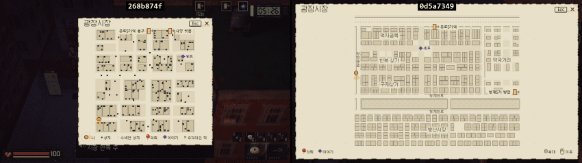
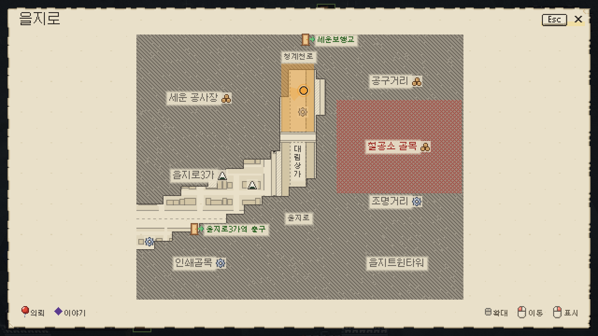
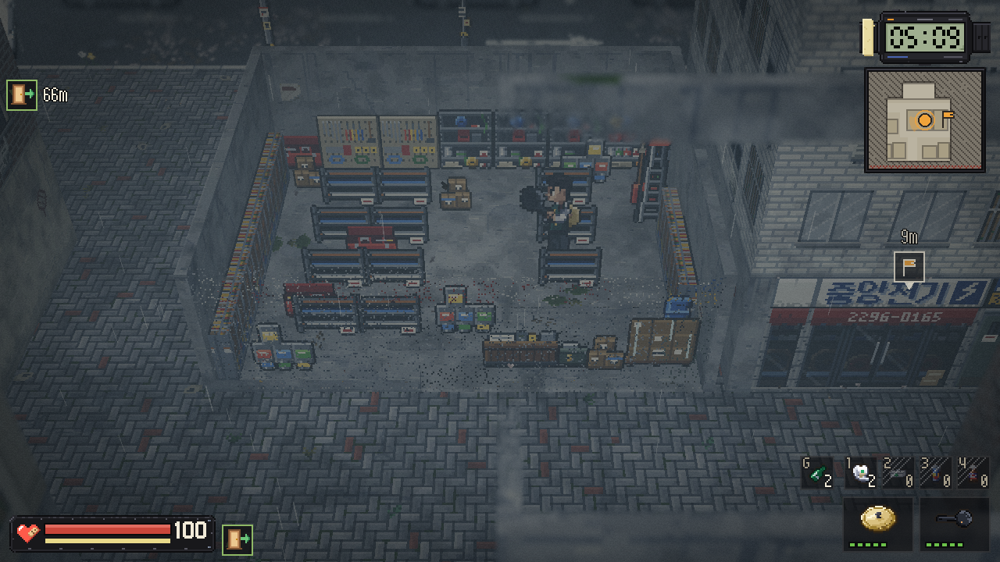
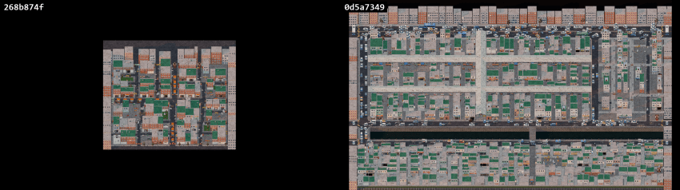
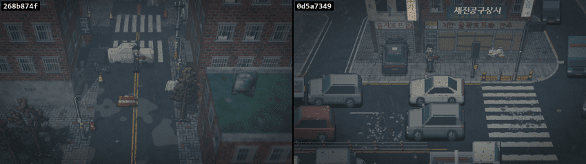
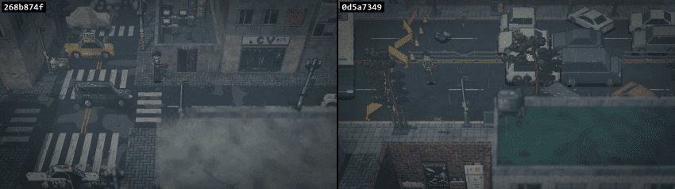
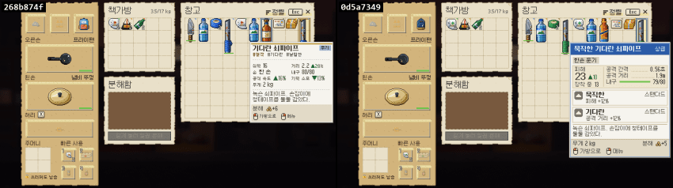
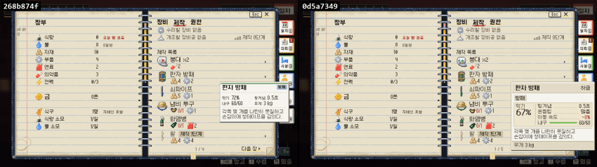

이상현상으로 멸망한 서울을 배경으로 호텔을 경영하는 게임을 개발하고 있우...
마지막 일지 이후 10월 동안 개발한 고봉밥(아님) 일지임...
*모두 "이전 -> 현재" 그림 배치임
게임을 테스트해주는 고마운 지인들이 공통적으로 하는 이야기가 있음.
맵이 좁다는 거였음. 다양성도 낮고.
PCG로 맵을 생성하는데, 이걸 또 키우면 어색해진다는 문제가 있었음.
그래서 이왕 하는김에 실제 지역을 유사하게 옮겨 보자는 생각을 하게 됨.
결론적으로 맵 사이즈 가로세로 2배 이상, 총 면적을 4배 이상 늘리는 대공사를 진행함.
예를 들자면,

맵이 커져서 확대, 축소도 가능하게 했고, 미니맵이랑 핑 시스템을 개발 중임.
각 건물이 뭐하는 곳인지도 모호하니까 모험을 통해 알아가야한다는 문제도 있어서, 업종별로 자원 아이콘도 표시하기로 함.


최종적으로 지금은 이런 느낌임. 처음 가는 곳은 안보이고, 구역별 난이도 표기해주고.
문제는 확대를 안하면 개짜쳐짜쳐상태임. 좋은 디자인을 고민해보는 중임...

평면도라 되게 어색하긴 한데, 아무튼 이런 느낌으로 확 늘어남.
지역이 여섯개라서 너무 거대한 작업이었우...
시가지 모습도 어색한 점들이 많았는데, 열심히 깎아왔음.
예시로,


대도시인데 왜 차가 저것밖에 없는가, 차는 왜이렇게 어색한가? 이런 생각이 들어서 난리난 도로를 최대한 구현해봄.
이외에 다른 다양한 지역도 수정을 했다고 할 수 이씀...
고정된 맵이면 좀 더 편했을 것 같은데, 매번 조금씩 달라지게 하려다 보니까 버그가 마구마구 생겨나더라.
다음은 인간형 도트랑 모션 파트임.
원래 도트나 타격감이 기묘하다는 말이 많아서 전체적으로 리워크를 진행함.
이전은 확실히 기묘한 감이 있음 ㅋㅋㅋ
이전:
현재:
이제 그래도 좀 게임 같아진 것 같우...
다음은 파밍 부문이우

아이템이 너무 파밍하는 재미가 없어보여서, 그냥 데스티니같은 루트슈터 느낌으로 다양한 등급 퍽을 만들었음.
실제로 게임 장르를 바꿀 수 있는 종류도 존재함.

아이템 밸런싱도 하고, 크래프팅 페이지 툴팁도 바꿔놓음.
이거 말고도 도입부 스토리, BGM 리워크 등 다른 것도 이것저것 손대긴 했음
교전 브금은 가상악기 일부랑 레이어별로 만들어두고 반응형으로 나오게 열심히 짰는데, 그냥 이런저런 트리거 다 켜지면 이런 느낌임(인게임 렌더)
이렇게 새로 테스트 빌드 만드니까 버그도 마구마구 나오더라.
그래서 버그 신나게 고치는 중임...
댓글
수집 당시 댓글 35개
나죽매 · 11.04 14:56:55
· AlFakher · 11.04 14:57:58
가갸거겨고교구규그기513 · 11.04 14:57:08
· AlFakher · 11.04 14:58:11
ㅇㅇ · 11.04 14:58:46
· AlFakher · 11.04 14:59:31
· ㅇㅇ · 11.04 15:02:43
· AlFakher · 11.04 15:03:50
팦핑구미 · 11.04 15:03:16
· AlFakher · 11.04 15:04:13
뉴비 · 11.04 15:22:34
· AlFakher · 11.04 15:25:20
Raum78 · 11.04 15:34:41
· AlFakher · 11.04 15:37:20
사슴발레리나 · 11.04 15:51:09
· AlFakher · 11.04 16:06:10
ㅇㅇ · 11.04 16:35:00
· AlFakher · 11.04 16:39:45
ㅇㅇ · 11.04 18:00:43
· AlFakher · 11.04 19:19:02
Gaemat · 11.04 22:14:27
· AlFakher · 11.05 02:41:24
ㅇㅇ · 11.05 09:03:29
Cast_Away · 11.05 09:14:12
ㅇㅇ · 11.05 09:26:39
ㅇㅇ · 11.05 09:29:35
ㅇㅇ · 11.05 09:40:12
ㅇㅇ · 11.05 09:49:13
ㅇㅇ · 11.05 10:21:27
ㅇㅇ · 11.05 10:31:31
ㅇㅇ · 11.05 10:43:11
ㅇㅇ · 11.05 11:14:59
ㅇㅇ · 11.05 16:22:25
환란 전 교회 휴거 · 11.05 23:37:27
JungNu · 11.06 19:42:06